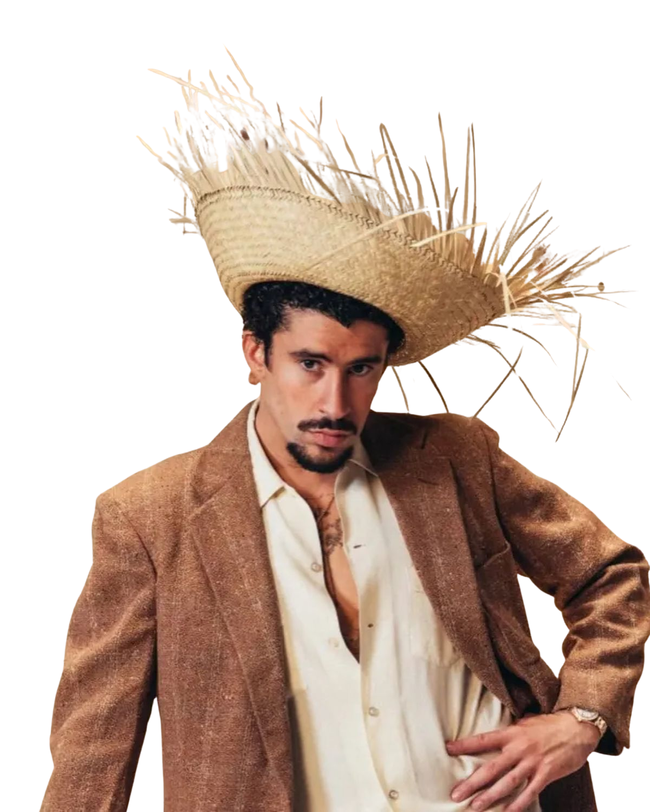
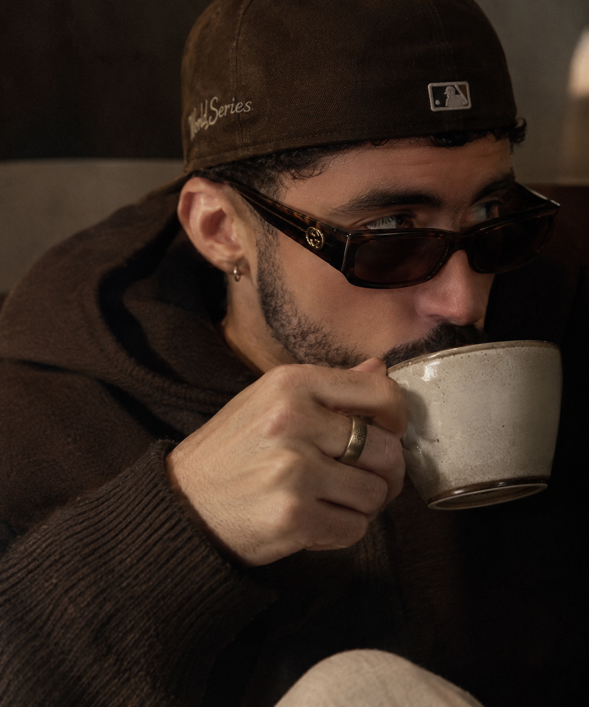
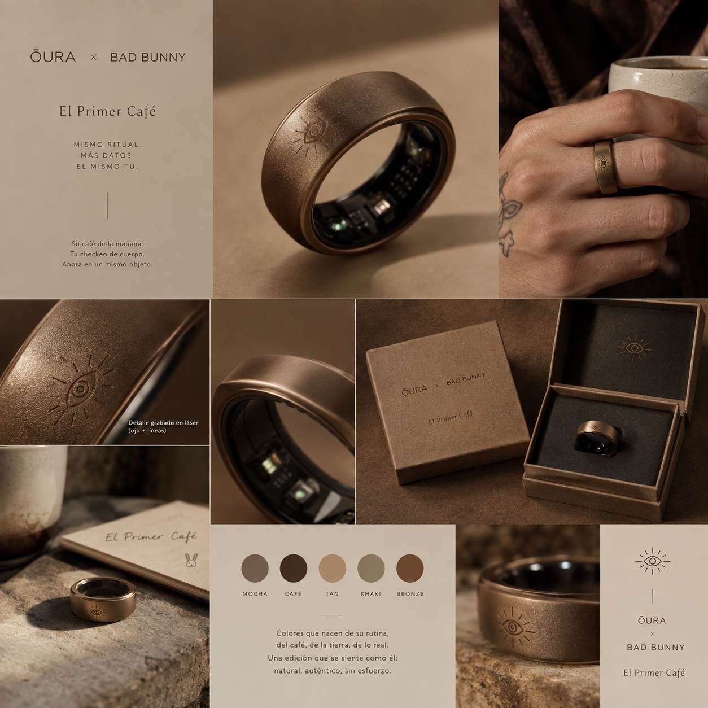
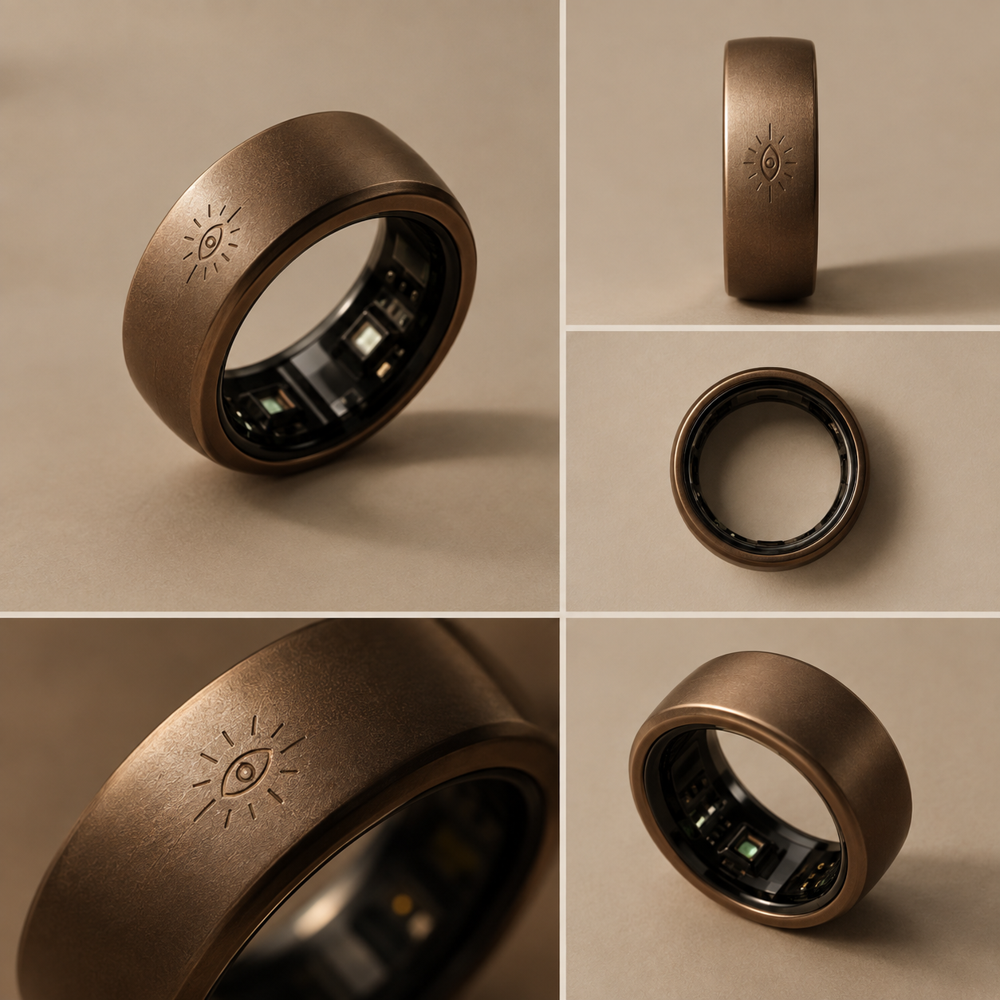
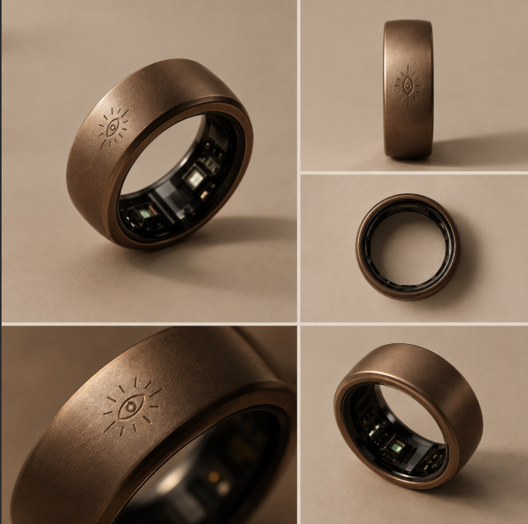

Acabado
Bronce y café, con textura inspirada en la tierra y el ritual de la mañana.
A TU PROPIO RITMO.
Coffee to wake up.
Oura to level up.


COFFEE TO WAKE UP.01 / EL RITUAL
No estamos inventando un ritual para él. Estamos conectando dos que ya existen: su café de la mañana y el checkeo de su cuerpo al despertar.
UN MISMO OBJETO. UNA NUEVA CONEXIÓN.02 / LA HISTORIA
EL RITUAL ANTES QUE LA MARCA.Queremos que Oura Ring sea el primer wearable de salud que Bad Bunny use como dueño de su propio ritual de recuperación.
Bad Bunny recibe cientos de propuestas de marca al año. Producto, cara conocida y una campaña genérica, sin conexión real con su historia.
Nuestra propuesta rompe ese molde desde el diseño y el ritual, no desde el presupuesto de marketing.
03 / EL PRODUCTO
PERSONALIZACIÓN DE SUPERFICIECircadian Brew conserva el hardware, los sensores y la ingeniería del Oura Ring estándar. La colaboración vive en la superficie y en su historia.
Bronce y café, con textura inspirada en la tierra y el ritual de la mañana.
Grabado del Ojo, nombre de línea Circadian Brew y narrativa de campaña.
Empaque de edición limitada diseñado para sentirse personal desde el primer café.

Una base estandarizada permite escalar el volumen sin reinventar el producto, reducir riesgo y costo, y conservar la sensación de que la edición es verdaderamente suya.
04 / LA CONEXIÓN
CULTURA × DISEÑO × RECUPERACIÓN
EXPLORACIÓN DE DISEÑO / CIRCADIAN BREWUna conexión cultural que una campaña genérica no puede construir.
Una voz global, en español.Más de 100 millones de oyentes mensuales y cuatro veces artista global número 1 en Spotify Wrapped.
La cultura en el centro.Primer álbum completamente en español en ganar el Grammy a Álbum del Año y cabeza de cartel del Super Bowl LX (2026).
Un territorio por abrir.La propuesta identifica una oportunidad de colaboración en salud y wearables vinculada a sus propios rituales.
Alcance citado: +55M en Instagram · +44M en YouTube · +40M en TikTok. Referencias y cifras de la propuesta original.
05 / EL VALOR
UNA LÍNEA CON VIDA MÁS ALLÁ DEL LANZAMIENTOPARA ŌURA
La oportunidad combina ingresos de hardware con membresías que continúan después de la compra inicial. La presentación estima cerca de 85% de retención después del primer año y una membresía aproximada de US$6 al mes.
A un precio promedio cercano a US$300 por anillo, el escenario equivale a unos US$150 millones en hardware, antes de suscripciones.
PARA BENITO Y RIMAS
Control sobre diseño, empaque y narrativa. Una edición ligada a una gira o residencia puede abrir futuras versiones en fechas significativas, en lugar de terminar en una sola aparición.
Escenarios y cifras de la presentación. Son ilustrativos y no constituyen una proyección garantizada.
06 / LA OPORTUNIDAD
UN PUENTE HACIA EL MERCADO LATINOProyección para Estados Unidos en 2026: una economía más grande que la mayoría de los países del mundo.
Con una valuación cercana a US$16 mil millones, la propuesta identifica una oportunidad para construir una conexión cultural más profunda con el mercado latino.
07 / LA RUTA
DE LA IDEA AL ACUERDOLa conversación avanza por fases, dejando la decisión creativa y comercial en las manos correctas.
Presentar la lógica cultural del ritual sin pedir todavía un compromiso comercial.
Mostrar mockups y una propuesta de edición limitada, patrocinio, duración, pago fijo, donativo y exclusividad. Las cifras de venta se presentan como escenarios ilustrativos.
Rimas y los equipos legales definen contrato, calendario y ejecución.
CEO y mánager de Rimas Entertainment. Punto de entrada para evaluar y cerrar el acuerdo.
Decisión final sobre diseño, narrativa y estética de Circadian Brew.
Contrato, exclusividad y cronograma.
EL CRUCE

No le estamos vendiendo un anillo inteligente. Le estamos dando una manera de proteger, con su propio ritual, lo único que ninguna marca le ha ofrecido todavía: su descanso.
08 / CIRCADIAN BREW